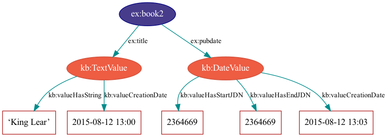
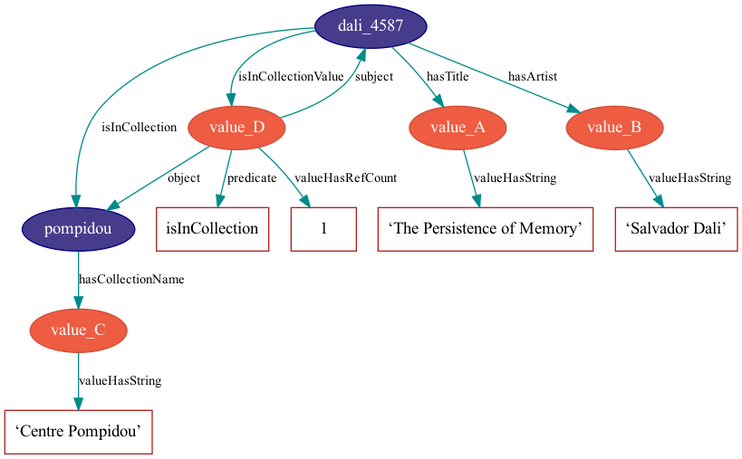
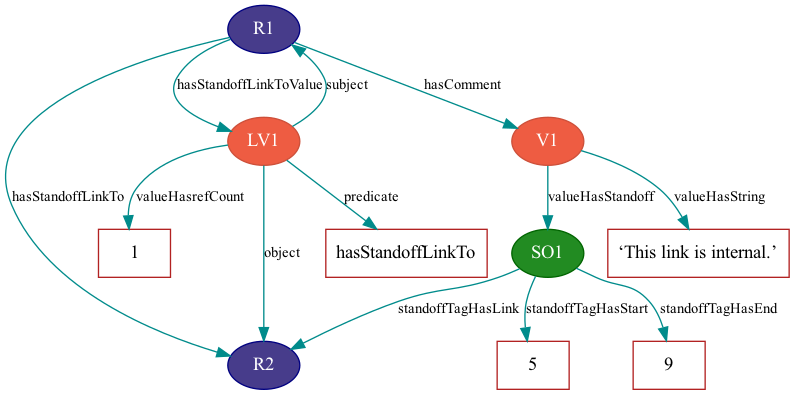

The Knora Base Ontology
Overview
The Knora base ontology is the main built-in Knora ontology. Each project that uses DSP-API must describe its data model by creating ontologies that extend this ontology.
The Knora base ontology is identified by the IRI http://www.knora.org/ontology/knora-base. In the DSP-API
documentation in general, it is identified by the prefix knora-base, but for brevity, in this document, we use kb or
omit the prefix entirely.
The Knora Data Model
The Knora data model is based on the observation that, in the humanities, a value or literal is often itself structured
and can be highly complex. Moreover, a value may have its own metadata, such as its creation date, information about
permissions, and so on. Therefore, the Knora base ontology describes structured value types that can store this type of
metadata. In the diagram below, a book (ex:book2) has a title
(identified by the predicate ex:title) and a publication date
(ex:pubdate), each of which has some metadata.

Projects
In Knora, each item of data belongs to some particular project. Each project using Knora must define a
kb:knoraProject, which has these properties (cardinalities are indicated in parentheses after each property name):
-
projectShortname(1): A short name that can be used to identify the project in configuration files and the like. -
projectLongname(0-1): The full name of the project. -
projectShortcode(1): A hexadecimal code that uniquely identifies the project. These codes are assigned to projects by the DaSCH. -
projectDescription(1-n): A description of the project. -
belongsToInstitution(0-1): Thekb:Institutionthat the project belongs to.
Ontologies and resources are associated with a project by means of the
kb:attachedToProject property, as described in Ontologies
and Properties of Resource). Users are associated with a project by means of
the kb:isInProject property, as described in
Users and Groups.
Ontologies
Each user-created ontology must be defined as an owl:Ontology with the properties rdfs:label and kb:attachedToProject.
Since DSP-API v20 kb:lastModificationDate property is also required.
Resources
All the content produced by a project (e.g. digitised primary source materials or research data) must be stored in
objects that belong to subclasses of kb:Resource, so that Knora can query and update that content. Each project using
the Knora base ontology must define its own OWL classes, derived from kb:Resource, to represent the types of data it
deals with. A subclass of kb:Resource may additionally be a subclass of any other class, e.g. an industry-standard
class such as foaf:Person; this can facilitate searches across projects.
Resources have properties that point to different parts of the content they contain. For example, a resource
representing a book could have a property called hasAuthor, pointing to the author of the book. There are two possible
kinds of content in a Knora resource: Knora values (see Values) or links to other resources (see
Links Between Resources). Properties that point to Knora values must be subproperties
of kb:hasValue, and properties that point to other resources must be subproperties of kb:hasLinkTo. Either of these
two types of properties may also be a subproperty of any other property, e.g. an industry-standard property such
as foaf:name; this can facilitate searches across projects. Each property definition must specify the types that its
subjects and objects must belong to (see
Constraints on the Types of Property Subjects and Objects
for details).
Each user-created resource class definition must use OWL cardinality restrictions to specify the properties that resources of that class can have (see OWL Cardinalities for details).
Resources are not versioned; only their values are versioned (see Values).
Every resource is required to have an rdfs:label. The object of this property is an xsd:string, rather than a Knora
value; hence it is not versioned. A user who has modify permission on a resource (see
Authorisation) can change its label.
A resource can be marked as deleted; Knora does this by adding the predicate kb:isDeleted true to the resource. An
optional kb:deleteComment may be added to explain why the resource has been marked as deleted. Deleted resources are
normally hidden. They cannot be undeleted, because even though resources are not versioned, it is necessary to be able
to find out when a resource was deleted. If desired, a new resource can be created by copying data from a deleted
resource.
Properties of Resource
-
creationDate(1): The time when the resource was created. -
attachedToUser(1): The user who owns the resource. -
attachedToProject(1): The project that the resource is part of. -
lastModificationDate(0-1): A timestamp indicating when the resource (or one of its values) was last modified. -
seqnum(0-1): The sequence number of the resource, if it is part of an ordered group of resources, such as the pages in a book. -
isDeleted(1): Indicates whether the resource has been deleted. -
deleteDate(0-1): If the resource has been deleted, indicates when it was deleted. -
deleteComment(0-1): If the resource has been deleted, indicates why it was deleted.
Resources can have properties that point to other resources; see Links Between Resources. A resource grants permissions to groups of users; see Authorisation.
Representations
It is not practical to store all data in RDF. In particular, RDF is not a good storage medium for binary data such as
images. Therefore, Knora stores such data outside the triplestore, in ordinary files. A resource can have metadata about
a file attached to it. The technical term for such a resource in Knora is a Representation. For each file, there is
a kb:FileValue in the triplestore containing metadata about the file (see FileValue). Knora
uses Sipi to store files. The Knora APIs provide ways to
create file values using Knora and Sipi.
A resource that has a file value must belong to one of the subclasses of
kb:Representation. Its subclasses include:
-
StillImageRepresentation: A representation containing a still image file. -
MovingImageRepresentation: A representation containing a video file. -
AudioRepresentation: A representation containing an audio file. -
DDDrepresentation: A representation containing a 3D image file. -
TextRepresentation: A representation containing a formatted text file, such as an XML file. -
DocumentRepresentation: A representation containing a document (such as a PDF file) that is not a text file. -
ArchiveRepresentation: A representation containing an archive file (such as a zip archive).
These classes can be used directly in data, but it is often better to make subclasses of them, to include metadata about the files being stored.
The base class of all these classes is Representation, which is not intended to be used directly. It has this
property, which its subclasses override:
hasFileValue(1): Points to a file value.
There are two ways for a project to design classes for representations. The simpler way is to create a resource class
that represents a thing in the world (such as ex:Painting) and also belongs to a subclass of Representation. This is
adequate if the class can have only one type of file attached to it. For example, if paintings are represented only by
still images, ex:Painting could be a subclass of StillImageRepresentation. This is the only approach supported in
DSP-API v1.
The more flexible approach, which is supported by DSP-API v2, is for each ex:Painting to
link (using kb:hasRepresentation or a subproperty) to other resources containing files that represent the painting.
Each of these other resources can extend a different subclass of Representation. For example, a painting could have a
StillImageRepresentation as well as a DDDrepresentation.
Standard Resource Classes
In general, each project using Knora must define its own subclasses of kb:Resource. However, the Knora base ontology
provides some standard subclasses of kb:Resource, which are intended to be used by any project:
-
Region: Represents a region of aRepresentation(see Representations). -
Annotation: Represents an annotation of a resource.
ThehasCommentproperty points to the text of the annotation, represented as akb:TextValue. -
LinkObj: Represents a link that connects two or more resources.
ALinkObjhas ahasLinkToproperty pointing to each resource that it connects, as well as ahasLinkToValueproperty pointing to a reification of each of these direct links ( see Links Between Resources).
ALinkObjis more complex (and hence less convenient and readable) than a simple direct link, but it has the advantage that it can be annotated using anAnnotation. For improved readability, a project can make its own subclasses ofLinkObjwith specific meanings.
Values
The Knora base ontology defines a set of OWL classes that are derived from kb:Value and represent different types of
structured values found in humanities data. This set of classes may not be extended by user-created ontologies.
A value is always part of one particular resource, which points to it using some property derived from hasValue. For
example, a user-created ontology could specify a Book class with a property hasSummary (derived from hasValue),
and that property could have a knora-base:objectClassConstraint of TextValue. This would mean that the summary of
each book is represented as a TextValue.
Knora values are versioned. Existing values are not modified. Instead, a new version of an existing value is created.
The new version is linked to the old version via the previousValue property.
Since each value version has a different IRI, there is no IRI that can be used to cite the value, such that it will
always refer to the latest version of the value. Therefore, the latest version of each value has a separate UUID, as the
object of the property valueHasUUID. When a new version of the value is created, this UUID is moved to the new
version. This makes it possible to cite the latest version of a value by searching for the UUID.
"Deleting" a value means marking it with kb:isDeleted. An optional kb:deleteComment may be added to explain why the
value has been marked as deleted. Deleted values are normally hidden.
Most types of values are marked as deleted without creating a new version of the value. However, link values must be
treated as a special case. Before a LinkValue can be marked as deleted, its reference count must be decremented to 0.
Therefore, a new version of the LinkValue is made, with a reference count of 0, and it is this new version that is
marked as deleted.
To simplify the enforcement of ontology constraints, and for consistency with resource updates, no new versions of a deleted value can be made; it is not possible to undelete. Instead, if desired, a new value can be created by copying data from a deleted value.
Properties of Value
-
valueCreationDate(1): The date and time when the value was created. -
attachedToUser(1): The user who owns the value. -
valueHasString(1): A human-readable string representation of the value's contents, which is available to Knora's full-text search index. -
valueHasOrder(0-1): A resource may have several properties of the same type with different values (which will be of the same class), and it may be necessary to indicate an order in which these values occur. For example, a book may have several authors which should appear in a defined order. Hence,valueHasOrder, when present, points to an integer literal indicating the order of a given value relative to the other values of the same property. These integers will not necessarily start at any particular number, and will not necessarily be consecutive. -
previousValue(0-1): The previous version of the value. -
valueHasUUID(0-1): The UUID that refers to all versions of the value. Only the latest version of the value has this property. -
isDeleted(1): Indicates whether the value has been deleted. -
deleteDate(0-1): If the value has been deleted, indicates when it was deleted. -
deleteComment(0-1): If the value has been deleted, indicates why it was deleted.
Each Knora value can grant permissions (see Authorisation).
Subclasses of Value
TextValue
Represents text, possibly including markup. The text is the object of the valueHasString property. A line break is
represented as a Unicode line feed character (U+000A). The non-printing Unicode character
INFORMATION SEPARATOR TWO (U+001E) can be used to separate words that are separated only by standoff markup (see
below), so they are recognised as separate in a full-text search index.
Markup is stored using this property:
-
valueHasStandoff(0-n): Points to a standoff markup tag. See Text with Standoff Markup. -
valueHasMapping(0-1): Points to the mapping used to create the standoff markup and to convert it back to the original XML. See Mapping to Create Standoff From XML.
A text value can have a specified language:
valueHasLanguage(0-1): An ISO 639-1 code as string specifying the language of the text.
DateValue
Humanities data includes many different types of dates. In Knora, a date has a specified calendar, and is always
represented as a period with start and end points (which may be equal), each of which has a precision (DAY, MONTH,
or YEAR). For GREGORIAN and JULIAN calendars, an optional ERA indicator term (BCE, CE, or BC, AD) can be
added to the date, when no era is provided the default era AD will be considered. Internally, the start and end points
are stored as two Julian Day Numbers. This calendar-independent representation makes it possible to compare and search
for dates regardless of the calendar in which they were entered. Properties:
-
valueHasCalendar(1): The name of the calendar in which the date should be displayed. CurrentlyGREGORIAN,JULIAN, andISLAMICcivil calendars are supported. -
valueHasStartJDN(1): The Julian Day Number of the start of the period (anxsd:integer). -
valueHasStartPrecision(1): The precision of the start of the period. -
valueHasEndJDN(1): The Julian Day Number of the end of the period (anxsd:integer). -
valueHasEndPrecision(1): The precision of the end of the period.
TimeValue
A Knora time value represents a precise moment in time in the Gregorian calendar. Since nanosecond precision can be included, it is suitable for use as a timestamp. Properties:
valueHasTimeStamp(1): Anxsd:dateTimeStamp, stored as anxsd:dateTime(because SPARQL does not supportxsd:dateTimeStamp).
IntValue
Represents an integer. Property:
valueHasInteger(1): Anxsd:integer.
ColorValue
valueHasColor(1): A string representing a color. The string encodes a color as hexadecimal RGB values, e.g.\#FF0000.
DecimalValue
Represents an arbitrary-precision decimal number. Property:
valueHasDecimal(1): Anxsd:decimal.
UriValue
Represents a non-Knora URI. Property:
valueHasUri(1): Anxsd:anyURI.
BooleanValue
Represents a boolean value. Property:
valueHasBoolean(1): Anxsd:boolean.
GeomValue
Represents a geometrical object as a JSON string, using normalized coordinates. Property:
valueHasGeometry(1): A JSON string.
GeonameValue
Represents a geolocation, using the identifiers found at GeoNames. Property:
valueHasGeonameCode(1): The identifier of a geographical feature from GeoNames, represented as anxsd:string.
IntervalValue
Represents a time interval, with precise start and end times on a timeline, e.g. relative to the beginning of an audio or video file. Properties:
-
valueHasIntervalStart(1): Anxsd:decimalrepresenting the start of the interval in seconds. -
valueHasIntervalEnd(1): Anxsd:decimalrepresenting the end of the interval in seconds.
ListValue
Projects often need to define lists or hierarchies of categories that can be assigned to many different resources. Then,
for example, a user interface can provide a drop-down menu to allow the user to assign a category to a resource.
The ListValue class provides a way to represent these sorts of data structures. It can represent either a flat list or
a tree.
A ListValue has this property:
valueHasListNode(1): Points to aListNode.
Each ListNode can have the following properties:
-
isRootNode(0-1): Set totrueif this is the root node. -
hasSubListNode(0-n): Points to the node's child nodes, if any. -
hasRootNode(0-1): Points to the root node of the list (absent ifisRootNodeistrue). -
listNodePosition(0-1): An integer indicating the node's position in the list of its siblings (absent ifisRootNodeistrue). -
listNodeName(0-1): The node's human-readable name (absent ifisRootNodeistrue).
FileValue
Knora stores certain kinds of data outside the triplestore, in files (see Representations). Each
digital object that is stored outside the triplestore has associated metadata, which is stored in the triplestore in
a kb:FileValue. The base class FileValue, which is not intended to be used directly, has these properties:
-
internalFilename(1): The name of the file as stored by Knora. -
internalMimeType(1): The MIME type of the file as stored by Knora. -
originalFilename(0-1): The original name of the file when it was uploaded to the DSP-API server. -
originalMimeType(0-1): The original MIME type of the file when it was uploaded to the Knora API server. -
isPreview(0-1): A boolean indicating whether the file is a preview, i.e. a small image representing the contents of the file. A preview is always aStillImageFileValue, regardless of the type of the enclosingRepresentation.
The subclasses of FileValue, which are intended to be used directly in data, include:
-
StillImageFileValue: Contains metadata about a still image file. -
MovingImageFileValue: Contains metadata about a video file. -
AudioFileValue: Contains metadata about an audio file. -
DDDFileValue: Contains metadata about a 3D image file. -
TextFileValue: Contains metadata about a text file. -
DocumentFileValue: Contains metadata about a document (such as PDF) that is not a text file. -
ArchiveFileValue: Contains metadata about an archive (such as zio archive).
Each of these classes contains properties that are specific to the type of file it describes. For example, still image files have dimensions, video files have frame rates, and so on.
FileValue objects are versioned like other values, and the actual files stored by Knora are also versioned. Version 1
of the DSP-API does not provide a way to retrieve a previous version of a file, but this feature will be added in a
subsequent version of the API.
LinkValue
A LinkValue is an RDF "reification" containing metadata about a link between two resources. It is therefore a subclass
of rdf:Statement as well as of Value. It has these properties:
rdf:subject (1)
: The resource that is the source of the link.
rdf:predicate (1)
: The link property.
rdf:object (1)
: The resource that is the target of the link.
valueHasRefCount (1)
: The reference count of the link. This is meaningful when the
LinkValue describes resource references in Standoff text markup
(see StandoffLinkTag). Otherwise, the reference count will always be 1 (if the link exists) or 0 (if
it has been deleted).
For details about how links are created in Knora, see Links Between Resources.
ExternalResValue
Represents a resource that is not stored in the RDF triplestore managed by Knora, but instead resides in an external
repository managed by some other software. The ExternalResValue contains the information that Knora needs in order to
access the resource, assuming that a suitable gateway plugin is installed.
extResAccessInfo (1)
: The location of the repository containing the external resource (e.g. its URL).
extResId (1)
: The repository-specific ID of the external resource.
extResProvider (1)
: The name of the external provider of the resource.
Links Between Resources
A link between two resources is expressed, first of all, as a triple, in which the subject is the resource that is the
source of the link, the predicate is a "link property" (a subproperty of kb:hasLinkTo), and the object is the resource
that is the target of the link.
It is also useful to store metadata about links. For example, Knora needs to know who owns the link, who has permission
to modify it, when it was created, and so on. Such metadata cannot simply describe the link property, because then it
would refer to that property in general, not to any particular instance in which that property is used to connect two
particular resources. To attach metadata to a specific link in RDF, it is necessary to create an RDF "reification". A
reification makes statements about a particular triple (subject, predicate, object), in this case the triple that
expresses the link between the resources. Knora uses reifications of type kb:LinkValue (described in
LinkValue to store metadata about links.
For example, suppose a project describes paintings that belong to collections. The project can define an ontology as follows (expressed here in Turtle format, and simplified for the purposes of illustration):
@prefix kb <http://www.knora.org/ontology/knora-base#> .
@prefix : <http://www.knora.org/ontology/paintings#> .
:Painting rdf:type owl:Class ;
rdfs:subClassOf kb:Resource ,
[ rdf:type owl:Restriction ;
owl:onProperty :hasArtist ;
owl:cardinality 1 ] ,
[ rdf:type owl:Restriction ;
owl:onProperty :hasTitle ;
owl:cardinality 1 ] ;
[ rdf:type owl:Restriction ;
owl:onProperty :isInCollection ;
owl:minCardinality 1 ] ;
[ rdf:type owl:Restriction ;
owl:onProperty :isInCollectionValue ;
owl:minCardinality 1 ] .
:Collection rdf:type owl:Class ;
rdfs:subClassOf kb:Resource ,
[ rdf:type owl:Restriction ;
owl:onProperty :hasCollectionName ;
owl:cardinality 1 ] .
:hasArtist rdf:type owl:ObjectProperty ;
rdfs:label "Name of artist" ;
kb:subjectClassConstraint :Painting ;
kb:objectClassConstraint kb:TextValue .
:hasTitle rdf:type owl:ObjectProperty ;
rdfs:label "Title of painting"
kb:subjectClassConstraint :Painting ;
kb:objectClassConstraint kb:TextValue .
:hasCollectionName rdf:type owl:ObjectProperty ;
rdfs:label "Name of collection" ;
kb:subjectClassConstraint :Collection ;
kb:objectClassConstraint kb:TextValue .
To link the paintings to the collection, we must add a "link property"
to the ontology. In this case, the link property will point from a painting to the collection it belongs to. Every link
property must be a subproperty of kb:hasLinkTo.
:isInCollection rdf:type owl:ObjectProperty ;
rdfs:subPropertyOf kb:hasLinkTo ;
kb:subjectClassConstraint :Painting ;
kb:objectClassConstraint :Collection .
We must then add a "link value property", which will point from a painting to a kb:LinkValue (described in
LinkValue), which will contain metadata about the link between the property and the collection. In
particular, the link value specifies the creator of the link, the date when it was created, and the permissions that
determine who can view or modify it. The name of the link value property is constructed using a simple naming
convention: the word Value is appended to the name of the link property. In this case, since our link property is
called
:isInCollection, the link value property must be called
:isInCollectionValue. Every link value property must be a subproperty of kb:hasLinkToValue.
:isInCollectionValue rdf:type owl:ObjectProperty ;
rdfs:subPropertyOf kb:hasLinkToValue ;
kb:subjectClassConstraint :Painting ;
kb:objectClassConstraint kb:LinkValue .
Given this ontology, we can create some RDF data describing a painting and a collection:
@prefix paintings <http://www.knora.org/ontology/paintings#> .
@prefix data <http://www.knora.org/ontology/paintings/data#> .
data:dali_4587 rdf:type paintings:Painting ;
paintings:hasTitle data:value_A ;
paintings:hasArtist data:value_B .
data:value_A rdf:type kb:TextValue ;
kb:valueHasString "The Persistence of Memory" .
data:value_B rdf:type kb:TextValue ;
kb:valueHasString "Salvador Dali" .
data:pompidou rdf:type paintings:Collection ;
paintings:hasCollectionName data:value_C .
data:value_C rdf:type kb:TextValue ;
kb:valueHasString "Centre Pompidou, Paris" .
We can then state that the painting is in the collection:
data:dali_4587 paintings:isInCollection data:pompidou ;
paintings:isinCollectionValue data:value_D .
data:value_D rdf:type kb:LinkValue ;
rdf:subject data:dali_4587 ;
rdf:predicate paintings:isInCollection ;
rdf:object data:pompidou ;
kb:valueHasRefCount 1 .
This creates a link (paintings:isInCollection) between the painting and the collection, along with a reification
containing metadata about the link. We can visualise the result as the following graph:

Knora allows a user to see a link if the requesting user has permission to see the source and target resources as well
as the kb:LinkValue.
Part-Whole-Relations between Resources
isPartOf
A special case of linked resources are part-of related resources, i.e. a resource consisting of several other
resources. In order to create a part-of relation between two resources, the resource that is part of another resource
needs to have a property that is either kb:isPartOf or a subproperty thereof.
kb:isPartOf itself is a subproperty of kb:hasLinkTo. Same as described above for link properties, a corresponding
part-of value property is created automatically. This value property has the same name as the part-of property with
Value appended. For example, if in an ontology data a property data:partOf was defined, the corresponding value
property would be named data:partOfValue. This newly created property data:partOfValue is defined as a subproperty
of kb:isPartOfValue.
Part-of relations are recommended for resources of type kb:StillImageRepresentation. In that case, the resource that
is part of another resource needs to have a property kb:seqnum or a subproperty thereof, with an integer as value. A
client can then use this information to leaf through the parts of the compound resource (p.ex. to leaf through the pages
of a book like in this example).
isSequenceOf
Similar to kb:isPartOf for kb:StillImageRepresentations, part-whole-relations can be defined for resources that have
a time dimension by using kb:isSequenceOf. You can use it for video or audio resources that are subtypes of
kb:MovingImageRepresentation and kb:AudioRepresentation.
kb:isSequenceOf is intended to be used in combination with the property kb:hasSequenceBounds which points to a
kb:IntervalValue. This defines the start and end point of the subseqence in relation to the entire audio/video
resource as an interval. When the properties are used in this combination, a dedicated behavior in the
frontend allows to display the sequences alongside the main resource.
There is an important difference between kb:isSequenceOf and kb:isPartOf: For kb:isPartOf, each part is a
kb:StillImageRepresentation and the whole consists of multiple such parts. In kb:isSequenceOf on the other hand, the
whole is one kb:MovingImageRepresentation or kb:AudioRepresentation. The parts only define which sub-sequence of
this representation they are.
Text with Standoff Markup
DSP-API is designed to be able to store text with markup, which can indicate formatting and structure, as well as the complex observations involved in transcribing handwritten manuscripts. One popular way of representing text in the humanities is to encode it in XML using the Text Encoding Initiative (TEI) guidelines. In DSP-API, a TEI/XML document can be stored as a file with attached metadata, but this is not recommended, because it does not allow to perform searches across multiple documents.
The recommended way to store text with markup in DSP-API is to use the built-in support for "standoff" markup, which is stored separately from the text. This has some advantages over embedded markup such as XML. While XML requires markup to have a hierarchical structure, and does not allow overlapping tags, standoff nodes do not have these limitations (see Using Standoff Properties for Marking-up Historical Documents in the Humanities). A standoff tag can be attached to any substring in the text by giving its start and end positions. Unlike in corpus linguistics, we do not use any tokenisation resulting in a form of predefined segmentation, which would limit the user's ability to freely annotate any ranges in the text.
For example, suppose we have the following text:
This sentence has overlapping visual attributes.
This would require just two standoff tags: (italic, start=5, end=29)
and (bold, start=14, end=36).
Moreover, standoff makes it possible to mark up the same text in different, possibly incompatible ways, allowing for different interpretations without making redundant copies of the text. In the Knora base ontology, any text value can have standoff tags.
By representing standoff as RDF triples, DSP-API makes markup searchable across multiple text documents in a repository. For example, if a repository contains documents in which references to persons are indicated in standoff, it is straightforward to find all the documents mentioning a particular person. DSP-API's standoff support is intended to make it possible to convert documents with embedded, hierarchical markup, such as TEI/XML, into RDF standoff and back again, with no data loss, thus bringing the benefits of RDF to existing TEI-encoded documents.
In the Knora base ontology, a TextValue can have one or more standoff tags. Each standoff tag indicates the start and
end positions of a substring in the text that has a particular attribute. The OWL class
kb:StandoffTag, which is the base class of all standoff node classes, has these properties:
standoffTagHasStart(1): The index of the first character in the text that has the attribute.standoffTagHasEnd(1): The index of the last character in the text that has the attribute, plus 1.standoffTagHasUUID(1): A UUID identifying this instance and those corresponding to it in later versions of theTextValueit belongs to. The UUID is a means to maintain a reference to a particular range of a text also when new versions are made and standoff tag IRIs change.standoffTagHasOriginalXMLID(0-1): The original ID of the XML element that the standoff tag represents, if any.standoffTagHasStartIndex(1): The start index of the standoff tag. Start indexes are numbered from 0 within the context of a particular text. When several standoff tags share the same start position, they can be nested correctly with this information when transforming them to XML.standoffTagHasEndIndex(1): The end index of the standoff tag. Start indexes are numbered from 0 within the context of a particular text. When several standoff tags share the same end position, they can be nested correctly with this information when transforming them to XML.standoffTagHasStartParent(0-1): Points to the parent standoff tag. This corresponds to the original nesting of tags in XML. If a standoff tag has no parent, it represents the XML root element. If the original XML element is a CLIX tag, it represents the start of a virtual (non syntactical) hierarchy.standoffTagHasEndParent(0-1): Points to the parent standoff tag if the original XML element is a CLIX tag and represents the end of a virtual (non syntactical) hierarchy.
The StandoffTag class is not used directly in RDF data; instead, its subclasses are used. A few subclasses are
currently provided in standoff-onto.ttl, and more will be added to support TEI semantics.
Projects are able to define their own custom standoff tag classes (direct subclasses of StandoffTag
or one of the standoff data type classes or subclasses of one of the standoff classes defined in standoff-onto.ttl).
Subclasses of StandoffTag
Standoff Data Type Tags
Associates data in some Knora value type with a substring in a text. Standoff data type tags are subclasses of ValueBase classes.
StandoffLinkTagIndicates that a substring refers to anotherkb:Resource. See StandoffLinkTag.StandoffInternalReferenceTagIndicates that a substring refers to another standoff tag in the same text value. See Internal Links in a TextValue.StandoffUriTagIndicates that a substring is associated with a URI, which is stored in the same form that is used forkb:UriValue. See UriValue.StandoffDateTagIndicates that a substring represents a date, which is stored in the same form that is used forkb:DateValue. See DateValue.StandoffColorTagIndicates that a substring represents a color, which is stored in the same form that is used forkb:ColorValue. See ColorValue.StandoffIntegerTagIndicates that a substring represents an integer, which is stored in the same form that is used forkb:IntegerValue. See IntValue.StandoffDecimalTagIndicates that a substring represents a number with fractions, which is stored in the same form that is used forkb:DecimalValue. See DecimalValue.StandoffIntervalTagIndicates that a substring represents an interval, which is stored in the same form that is used forkb:IntervalValue. See IntervalValue.StandoffBooleanTagIndicates that a substring represents a Boolean, which is stored in the same form that is used forkb:BooleanValue. See BooleanValue.StandoffTimeTagIndicates that a substring represents a timestamp, which is stored in the same form that is used forkb:TimeValue. See TimeValue.
StandoffLinkTag
A StandoffLinkTag Indicates that a substring is associated with a Knora resource. For example, if a repository
contains resources representing persons, a text could be marked up so that each time a person's name is mentioned,
a StandoffLinkTag connects the name to the Knora resource describing that person. It has the following property:
standoffTagHasLink (1): The IRI of the resource that is referred to.
One of the design goals of the Knora base ontology is to make it easy and efficient to find out which resources contain
references to a given resource. Direct links are easier and more efficient to query than indirect links. Therefore, when
a text value contains a resource reference in its standoff nodes, Knora automatically creates a direct link between the
containing resource and the target resource, along with an RDF reification (a kb:LinkValue) describing the link, as
discussed in Links Between Resources. In this case, the link property is
always kb:hasStandoffLinkTo, and the link value property (which points to the LinkValue) is always
kb:hasStandoffLinkToValue.
DSP-API automatically updates direct links and reifications for standoff resource references when text values are updated.
To do this, it keeps track of the number of text values in each resource that contain at least one standoff reference to
a given target resource. It stores this number as the reference count of the LinkValue (see
LinkValue) describing the direct link. Each time this number changes, it makes a new version of
the LinkValue, with an updated reference count. When the reference count reaches zero, it removes the direct link and
makes a new version of the LinkValue, marked with kb:isDeleted.
For example, if data:R1 is a resource with a text value in which the resource data:R2 is referenced, the repository
could contain the following triples:
data:R1 ex:hasComment data:V1 .
data:V1 rdf:type kb:TextValue ;
kb:valueHasString "This link is internal." ;
kb:valueHasStandoff data:SO1 .
data:SO1 rdf:type kb:StandoffLinkTag ;
kb:standoffTagHasStart: 5 ;
kb:standoffTagHasEnd: 9 ;
kb:standoffTagHasLink data:R2 .
data:R1 kb:hasStandoffLinkTo data:R2 .
data:R1 kb:hasStandoffLinkToValue data:LV1 .
data:LV1 rdf:type kb:LinkValue ;
rdf:subject data:R1 ;
rdf:predicate kb:hasStandoffLinkTo ;
rdf:object data:R2 ;
kb:valueHasRefCount 1 .
The result can be visualized like this:

Link values created automatically for resource references in standoff are visible to all users, and the creator of these
link values is always
kb:SystemUser (see Users and Groups). The DSP-API server allows a user to see a standoff link if
the user has permission to see the source and target resources.
Internal Links in a TextValue
Internal links in a TextValue can be represented using the data type standoff class StandoffInternalReferenceTag or
a subclass of it. It has the following property:
standoffTagHasInternalReference (1): Points to a StandoffTag that belongs to the same TextValue. It has an objectClassConstraint of StandoffTag.
For links to a kb:Resource, see StandoffLinkTag.
Mapping to Create Standoff From XML
A mapping allows for the conversion of an XML document to RDF-standoff and back. A mapping defines one-to-one relations between XML elements (with or without a class) and attributes and standoff classes and properties (see XML to Standoff Mapping).
A mapping is represented by a kb:XMLToStandoffMapping which contains one or more kb:MappingElement.
A kb:MappingElement maps an XML element (including attributes) to a standoff class and standoff properties. It has the
following properties:
mappingHasXMLTagname(1): The name of the XML element that is mapped to a standoff class.mappingHasXMLNamespace(1): The XML namespace of the XML element that is mapped to a standoff class. If no namespace is given,noNamespaceis used.mappingHasXMLClass(1): The name of the class of the XML element. If it has no class,noClassis used.mappingHasStandoffClass(1): The standoff class the XML element is mapped to.mappingHasXMLAttribute(0-n): Maps XML attributes to standoff properties usingMappingXMLAttribute. See below.mappingHasStandoffDataTypeClass(0-1): Indicates the standoff data type class of the standoff class the XML element is mapped to.mappingElementRequiresSeparator(1): Indicates if there should be an invisible word separator inserted after the XML element in the RDF-standoff representation. Once the markup is stripped, text segments that belonged to different elements may be concatenated.
A MappingXMLAttribute has the following properties:
- mappingHasXMLAttributename: The name of the XML attribute that is mapped to a standoff property.
- mappingHasXMLNamespace: The namespace of the XML attribute that is mapped to a standoff property. If no namespace is given, noNamespace is used.
- mappingHasStandoffProperty: The standoff property the XML attribute is mapped to.
DSP-API includes a standard mapping used by the DSP APP. It has the IRI http://rdfh.ch/standoff/mappings/StandardMapping and defines mappings for a few elements used to write texts with simple markup.
Standoff in Digital Editions
DSP-API's standoff is designed to make it possible to convert XML documents to standoff and back. One application for this feature is an editing workflow in which an editor works in an XML editor, and the resulting XML documents are converted to standoff and stored in the DSP, where they can be searched and annotated.
If an editor wants to correct text that has been imported from XML into standoff, the text can be exported as XML, edited, and imported again. To preserve annotations on standoff tags across edits, each tag can automatically be given a UUID. In a future version of the Knora base ontology, it may be possible to create annotations that point to UUIDs rather than to IRIs. When a text is exported to XML, the UUIDs can be included in the XML. When the edited XML is imported again, it can be converted to new standoff tags with the same UUIDs. Annotations that applied to standoff tags in the previous version of the text will therefore also apply to equivalent tags in the new version.
When text is converted from XML into standoff, tags are also given indexes, which are numbered from 0 within the context of a particular text. This makes it possible to order tags that share the same position, and to preserve the hierarchy of the original XML document. An ordinary, hierarchical XML tag is converted to a standoff tag that has one index, as well as the index of its parent tag, if any. The Knora base ontology also supports non-hierarchical markup such as CLIX, which enables overlapping markup to be represented in XML. When non-hierarchical markup is converted to standoff, both the start position and the end position of the standoff tag have indexes and parent indexes.
To support these features, a standoff tag can have these additional properties:
- standoffTagHasStartIndex (0-1): The index of the start position.
- standoffTagHasEndIndex (0-1): The index of the end position, if this is a non-hierarchical tag.
- standoffTagHasStartParent (0-1): The IRI of the tag, if any, that contains the start position.
- standoffTagHasEndParent (0-1): The IRI of the tag, if any, that contains the end position, if this is a non-hierarchical tag.
- standoffTagHasUUID (0-1): A UUID that can be used to annotate a standoff tag that may be present in different versions of a text,
or in different layers of a text (such as a diplomatic transcription and an edited critical text).
Querying Standoff in SPARQL
A future version of DSP-API may provide an API for querying standoff markup. In the meantime, it is possible to query it
directly in SPARQL. For example, here is a SPARQL query (using RDFS inference) that finds all the text values that
have a standoff date tag referring to Christmas Eve 2016, contained in a StandoffItalicTag:
PREFIX knora-base: <http://www.knora.org/ontology/knora-base#>
PREFIX standoff: <http://www.knora.org/ontology/standoff#>
select * where {
?standoffTag a knora-base:StandoffDateTag .
?standoffTag knora-base:valueHasStartJDN ?dateStart .
?standoffTag knora-base:valueHasEndJDN ?dateEnd .
FILTER (2457747 <= ?dateEnd && 2457747 >= ?dateStart)
?standoffTag knora-base:standoffTagHasStartParent ?parent .
?parent a standoff:StandoffItalicTag .
?textValue knora-base:valueHasStandoff ?standoffTag .
?textValue knora-base:valueHasString ?string .
?standoffTag knora-base:standoffTagHasStart ?startPos .
?standoffTag knora-base:standoffTagHasEnd ?endPos .
}
Authorisation
Users and Groups
Each Knora user is represented by an object belonging to the class
kb:User, which is a subclass of foaf:Person, and has the following properties:
userid (1)
: A unique identifier that the user must provide when logging in.
password (1)
: A cryptographic hash of the user's password.
email (0-n)
: Email addresses belonging to the user.
isInProject (0-n)
: Projects that the user is a member of.
isInGroup (0-n)
: user-created groups that the user is a member of.
foaf:familyName (1)
: The user's family name.
foaf:givenName (1)
: The user's given name.
Knora's concept of access control is that an object (a resource or value) can grant permissions to groups of users (but not to individual users). There are several built-in groups:
knora-admin:UnknownUser
: Any user who has not logged into Knora is automatically assigned to this group.
knora-admin:KnownUser
: Any user who has logged into Knora is automatically assigned to this group.
knora-admin:ProjectMember
: When checking a user's permissions on an object, the user is automatically assigned to this group if she is a member of the project that the object belongs to.
knora-admin:Creator
: When checking a user's permissions on an object, the user is automatically assigned to this group if he is the creator of the object.
knora-admin:ProjectAdmin
: When checking a user's permissions on an object, the user is automatically assigned to this group if she is an administrator of the project that the object belongs to.
knora-admin:SystemAdmin
: The group of Knora system administrators.
A user-created ontology can define additional groups, which must belong to the OWL class knora-admin:UserGroup.
There is one built-in knora-admin:SystemUser, which is the creator of link values created automatically for resource
references in standoff markup (see StandoffLinkTag).
Permissions
Each resource or value can grant certain permissions to specified user groups. These permissions are represented as the
object of the predicate kb:hasPermissions, which is required on every kb:Resource
and on the current version of every kb:Value. The permissions attached to the current version of a value also apply to
previous versions of the value. Value versions other than the current one do not have this predicate.
The following permissions can be granted:
- Restricted view permission (RV) Allows a restricted view of the object, e.g. a view of an image with a watermark.
- View permission (V) Allows an unrestricted view of the object. Having view permission on a resource only affects the user's ability to view information about the resource other than its values. To view a value, she must have view permission on the value itself.
- Modify permission (M) For values, this permission allows a new version of a value to be created. For resources, this allows the user to create a new value (as opposed to a new version of an existing value), or to change information about the resource other than its values. When he wants to make a new version of a value, his permissions on the containing resource are not relevant. However, when he wants to change the target of a link, the old link must be deleted and a new one created, so he needs modify permission on the resource.
- Delete permission (D) Allows the item to be marked as deleted.
- Change rights permission (CR) Allows the permissions granted by the object to be changed.
Each permission in the above list implies all lower-numbered permissions. A user's permission level on a particular object is calculated in the following way:
- Make a list of the groups that the user belongs to, including
Creatorand/orProjectMemberif applicable. - Make a list of the permissions that she can obtain on the object, by iterating over the permissions that the object grants. For each permission, if she is in the specified group, add the specified permission to the list of permissions she can obtain.
- From the resulting list, select the highest-level permission.
- If the result is that she would have no permissions, give her whatever permission
UnknownUserwould have.
To view a link between resources, a user needs permission to view the source and target resources. He also needs
permission to view the
LinkValue representing the link, unless the link property is
hasStandoffLinkTo (see StandoffLinkTag).
The format of the object of kb:hasPermissions is as follows:
- Each permission is represented by the one-letter or two-letter abbreviation given above.
- Each permission abbreviation is followed by a space, then a comma-separated list of groups that the permission is granted to.
- The IRIs of built-in groups are shortened using the
knora-adminprefix. - Multiple permissions are separated by a vertical bar (
|).
For example, if an object grants view permission to unknown and known users, and modify permission to project members, the resulting permission literal would be:
V knora-admin:UnknownUser,knora-admin:KnownUser|M knora-admin:ProjectMember
Consistency Checking
Knora tries to enforce repository consistency by checking constraints that are specified in the Knora base ontology and in user-created ontologies. Three types of consistency rules are enforced:
- Cardinalities in OWL class definitions must be satisfied.
- Constraints on the types of the subjects and objects of OWL object properties must be satisfied.
- A datatype property may not have an empty string as an object.
OWL Cardinalities
As noted in Resources, each subclass of
Resource must use OWL cardinality restrictions to specify the properties it can have. More specifically, a resource is
allowed to have a property that is a subproperty of kb:hasValue or kb:hasLinkTo only if the resource's class has
some cardinality for that property. Similarly, a value is allowed to have a subproperty of kb:valueHas
only if the value's class has some cardinality for that property.
Knora supports, and attempts to enforce, the following cardinality constraints:
owl:cardinality 1
: A resource of this class must have exactly one instance of the specified property.
owl:minCardinality 1
: A resource of this class must have at least one instance of the specified property.
owl:maxCardinality 1
: A resource of this class may have zero or one instance of the specified property.
owl:minCardinality 0
: A resource of this class may have zero or more instances of the specified property.
Knora requires cardinalities to be defined using blank nodes, as in the following example from knora-base:
:Representation rdf:type owl:Class ;
rdfs:subClassOf :Resource ,
[ rdf:type owl:Restriction ;
owl:onProperty :hasFileValue ;
owl:minCardinality "1"^^xsd:nonNegativeInteger ] .
:StillImageRepresentation rdf:type owl:Class ;
rdfs:subClassOf :Representation ,
[ rdf:type owl:Restriction ;
owl:onProperty :hasStillImageFileValue ;
owl:minCardinality "1"^^xsd:nonNegativeInteger ] .
The cardinality of a link property must be the same as the cardinality of the corresponding link value property.
Each owl:Restriction may have the predicate salsah-gui:guiOrder to indicate the order in which properties should be
displayed in a GUI
(see The SALSAH GUI Ontology).
A resource class inherits cardinalities from its superclasses. This follows from the rules of
RDFS inference. Also, in Knora, cardinalities in the subclass can
override cardinalities that would otherwise be inherited from the superclass. Specifically, if a superclass has a
cardinality on a property P, and a subclass has a cardinality on a subproperty of P, the subclass's cardinality
overrides the superclass's cardinality. In the example above,
hasStillImageFileValue is a subproperty of hasFileValue. Therefore, the cardinality on hasStillImageFileValue
overrides (i.e. replaces)
the one on hasFileValue.
Note that, unlike cardinalities, predicates of properties are not inherited. If :foo rdfs:subPropertyOf :bar, this
does not mean that
:foo inherits anything from :bar. Any predicates of :foo that are also needed by :bar must be defined explicitly
on :bar. This design decision was made because property predicate inheritance is not provided by RDFS inference, and
would make it more difficult to check the correctness of ontologies, while providing little practical benefit.
For more information about OWL cardinalities, see the OWL 2 Primer.
Constraints on the Types of Property Subjects and Objects
When a user-created ontology defines a property, it must indicate the types that are allowed as objects (and, if possible, as subjects) of the property. This is done using the following Knora-specific properties:
subjectClassConstraint
: Specifies the class that subjects of the property must belong to. This constraint is recommended but not required. Knora will attempt to enforce this constraint.
objectClassConstraint
: If the property is an object property, specifies the class that objects of the property must belong to. Every
subproperty of
kb:hasValue or a kb:hasLinkTo (i.e. every property of a resource that points to a kb:Value or to another resource)
is required to have this constraint, because Knora relies on it to know what type of object to expect for the property.
Knora will attempt to enforce this constraint.
objectDatatypeConstraint
: If the property is a datatype property, specifies the type of literals that can be objects of the property. Knora will not attempt to enforce this constraint, but it is useful for documentation purposes.
Note that it is possible for a subproperty to have a more restrictive contraint than its base property, by specifing a subject or object class that is a subclass of the one specified in the base property. However, it is not possible for the subproperty to make the base property's constraint less restrictive.
See also Why doesn’t Knora use rdfs:domain and rdfs:range for consistency checking?
Consistency Constraint Example
A user-created ontology could define consistency constraints as in this simplified example:
:book rdf:type owl:Class ;
rdfs:subClassOf knora-base:Resource ,
[ rdf:type owl:Restriction ;
owl:onProperty :hasTitle ;
owl:cardinality "1"^^xsd:nonNegativeInteger ] ,
[ rdf:type owl:Restriction ;
owl:onProperty :hasAuthor ;
owl:minCardinality "0"^^xsd:nonNegativeInteger ] .
:hasTitle rdf:type owl:ObjectProperty ;
knora-base:subjectClassConstraint :book ;
knora-base:objectClassConstraint knora-base:TextValue .
:hasAuthor rdf:type owl:ObjectProperty ;
knora-base:subjectClassConstraint :book ;
knora-base:objectClassConstraint knora-base:TextValue .
Summary of Restrictions on User-Created Ontologies
An ontology can refer to a Knora ontology in another project only if the other ontology is built-in or shared (see Shared Ontologies).
Restrictions on Classes
- Each class must be a subclass of either
kb:Resourceorkb:StandoffTag, but not both (note that this forbids user-created subclasses ofkb:Value). - All the cardinalities that a class defines directly (i.e. does not inherit from
kb:Resource) must be on properties that are defined in the triplestore. - Within the cardinalities of a class, there must be a link value property for each link property and vice versa.
- The cardinality of a link property must be the same as the cardinality of the corresponding link value property.
- A cardinality on a property with a boolean value must be
owl:cardinality 1orowl:maxCardinality 1. - Each class must be a subclass of all the classes that are subject class constraints of the properties in its cardinalities.
- If it's a resource class, all its directly defined cardinalities must be on Knora resource properties (subproperties
of
kb:hasValueorkb:hasLinkTo), and all its base classes with Knora IRIs must also be resource classes. A cardinality onkb:resourcePropertyorkb:hasValueis forbidden. It must also have anrdfs:label. - If it's a standoff class, none of its cardinalities may be on Knora resource properties, and all its base classes with Knora IRIs must also be standoff classes.
- A class cannot have a cardinality on property P as well as a cardinality on a subproperty of P.
Restrictions on properties
- The property's subject class constraint, if provided, must be a subclass of
kb:Resourceorkb:StandoffTag, and must be a subclass of the subject class constraints of all its base properties. - Its object class constraint, if provided, must be a subclass of the object class constraints of all its base properties.
- If the property is a Knora resource property, it must have an object class constraint and an
rdfs:label. - It can't be a subproperty of both
kb:hasValueandkb:hasLinkTo. - It can't be a subproperty of
kb:hasFileValue. - Each of its base properties that has a Knora IRI must also be a Knora resource property.
Standardisation
The DaSCH intends to coordinate the standardisation of generally useful entities proposed in user-created ontologies. We envisage a process in which two or more projects would initiate the process by starting a public discussion on proposed entities to be shared. Once a consensus was reached, the DaSCH would publish these entities in a shared ontology).
Knora Ontology Versions
The Knora base ontology has the property kb:ontologyVersion, whose object is a string that indicates the deployed
version of all the Knora built-in ontologies. This allows the
repository update program to determine which repository updates are needed
when Knora is upgraded.